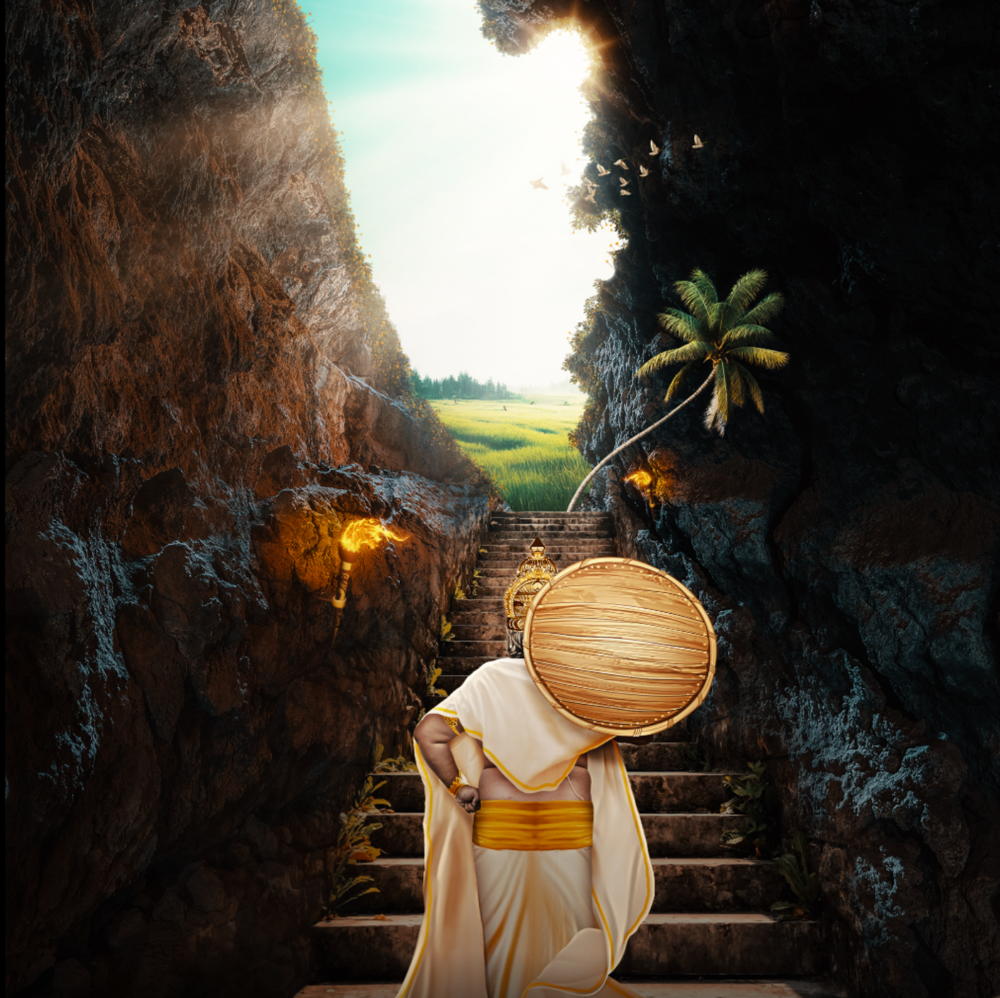

My Story
My story is one intertwined with legend and myth. As the tale goes, my growing power and popularity raised concerns among the gods, particularly Lord Vishnu. To humble me, Lord Vishnu assumed the form of Vamana, a dwarf Brahmin, and requested three paces of land as a boon. I granted this humble request, but to my surprise, Vamana expanded to cover the entire universe in three steps. Thus, I was humbled and pushed to the netherworld. However, in recognition of my virtues and love for my people, Lord Vishnu granted me a special boon. I was allowed to visit my beloved kingdom and people once a year during the grand festival of Onam.
Onam, a festival that lasts for ten days, is a joyous occasion where Kerala unites in celebration. It marks the homecoming of Maveli, the beloved king, who symbolizes Kerala's rich cultural heritage and the values of equality and justice. The grand feast of Onasadya, vibrant Pookalam flower rangolis, traditional dances like Kathakali, and the exhilarating Vallamkali boat races are all part of the festivities that reflect the enduring bond between the land and its people.